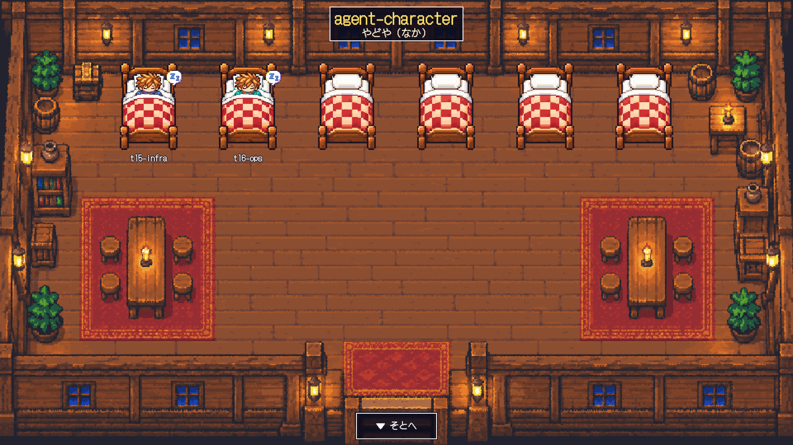
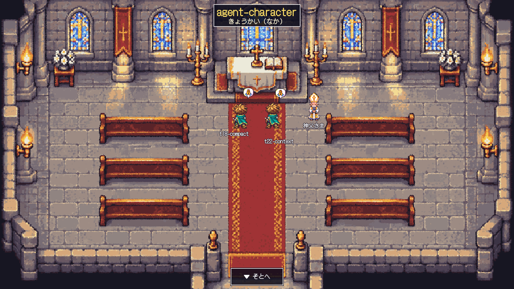
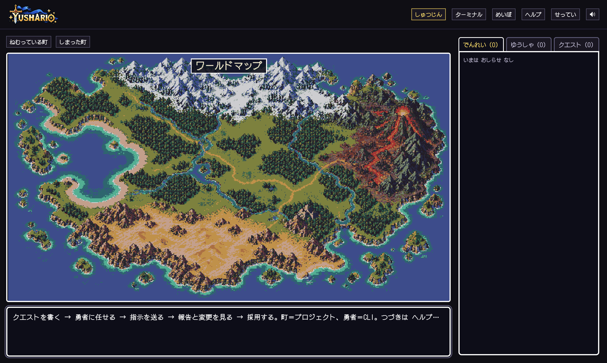
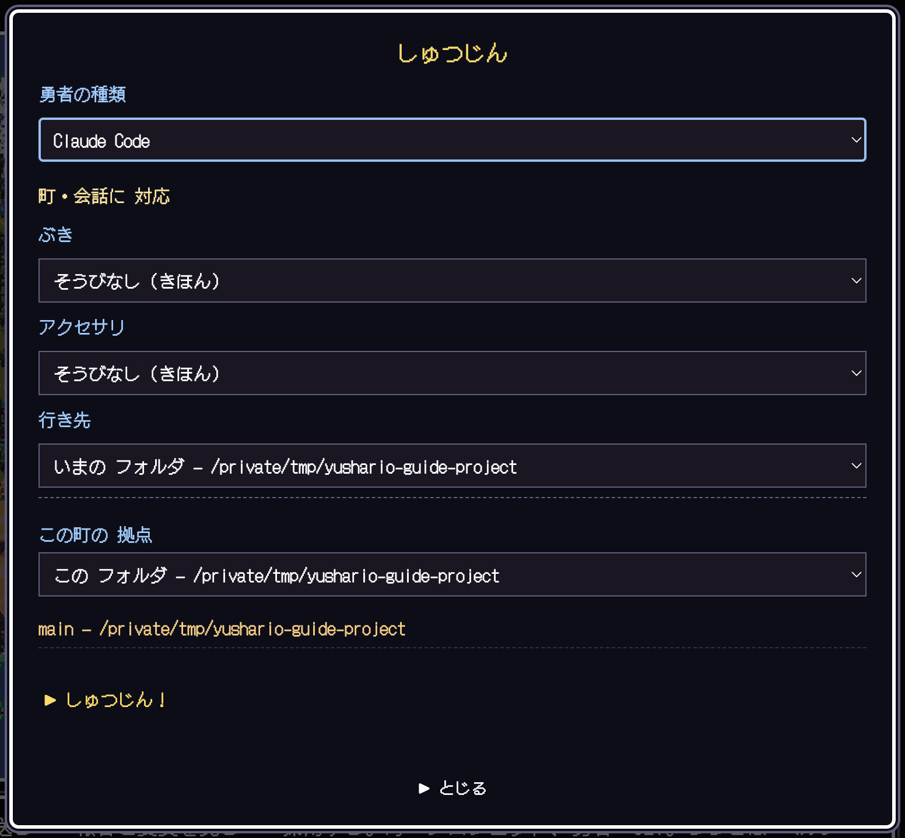
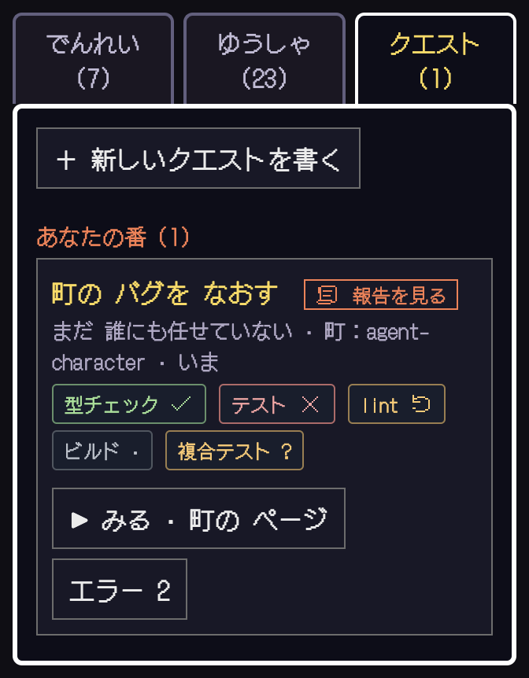
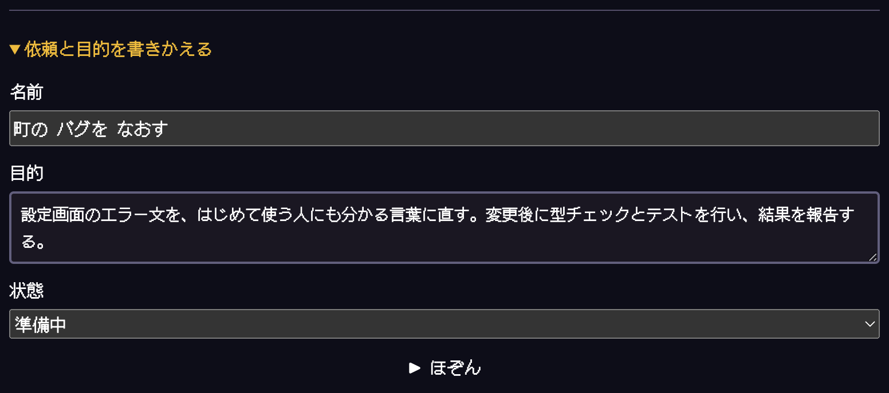
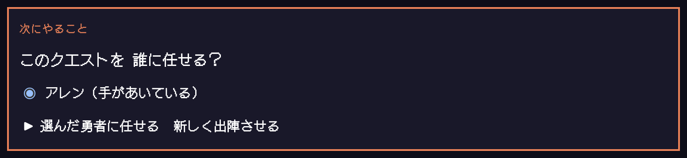
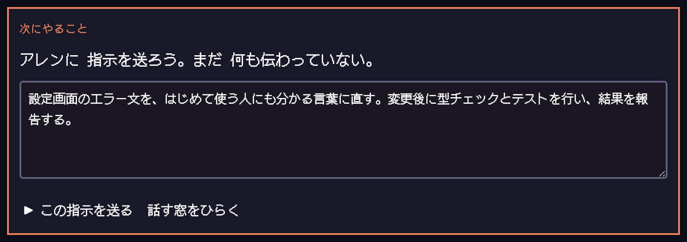
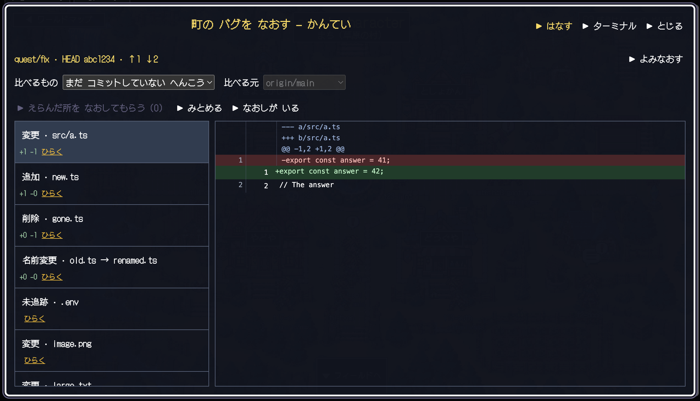
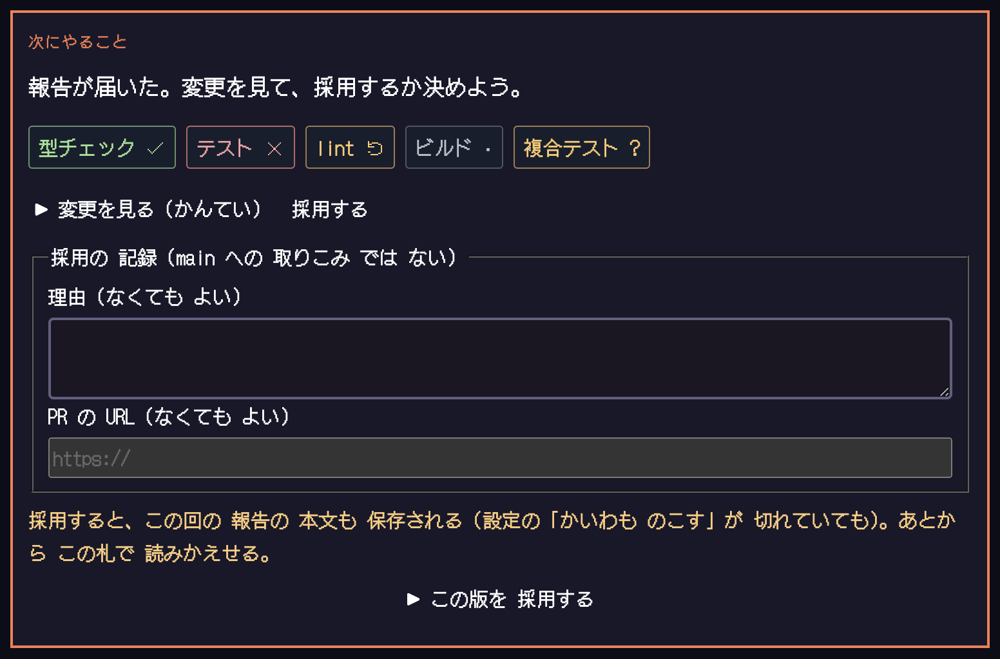

任せる
目的を「クエスト」に。勇者を選び、パーティーを編成して指示を送ります。
いつもの仕事が、勇者の物語になる。
AIは勇者に。プロジェクトは町に。
さあ、あなたの仕事をクエストにしよう。
AIエージェントと旅する、ローカルRPG開発環境
STORY / 物語のはじまり
ファイルを直す日も。テストに挑む日も。
いつもの仕事に、ちょっとわくわくする景色を。
ターミナルの向こうで働くAIが、ドット絵の勇者になる。プロジェクトは町になり、仕事はクエストに変わる。勇者を迎え、戦いを見守り、届いた報告を見る。Yusharioは、退屈な仕事を冒険として楽しむための、小さな開発環境です。
冒険の中身は、あなたの本物の仕事。いつものCLIはそのままに、依頼も、確認も、成果を受け取る瞬間も、この町から。
目的を「クエスト」に。勇者を選び、パーティーを編成して指示を送ります。
編集は草原、テストは洞窟へ。進み具合や判断待ちを、地図とでんれいで見渡せます。
報告、Gitの差分、検証の証拠を確認。採用するか、なおしてもらうかは、あなたが決めます。
PLAY DEMO / 勇者の町へ、ようこそ
勇者の町を、ひと足先に体験。町をめぐるだけでなく、勇者のコマンド、報告、クエスト、パーティー、変更の鑑定まで。インストールせず、この場で試せます。
体験版はすべて架空のデータです。実際のCLI起動・コマンド実行・ファイル変更は行いません。端末はデモの案内表示のみで、自動作戦など一部の操作は対象外です。データの変更は再読み込みで戻ります。画面付きの操作ガイドはこちら。
WORLD / 冒険の舞台
草原から、雪国まで。
5つのすがたと、仕事が息づく世界。
FIELD / 仕事の最前線
草原はファイル編集、洞窟はテスト・型検査、夜の森はコマンド実行。サブエージェントは、一緒に戦う仲間になります。

INN / ひと休み
10分以上動きのない勇者は宿屋へ。待機しているのか、作業しているのか、姿で見分けられます。

CHURCH / 次の旅支度
対応するCLIの会話整理は教会での祈りに。整理の判断・実行はCLIが行い、Yusharioはその様子を映します。
掲載画像はアプリ内デモ画面の描画をブラウザでキャプチャしたものです。プロジェクト名・勇者名・状態は架空のデータです。
START / 旅立ちのしたく
必要なのは、いつものプロジェクトと
ログイン済みのエージェントCLI。
ターミナルでソースを取得して、ビルド・起動します。
git clone https://github.com/Morishita-mm/agent-character.git
cd agent-character
npm install
npm run build
npm startローカルブラウザで町が開きます。起動URLのトークンは共有しないでください。
SCREEN BY SCREEN / 画面でたどる、最初の依頼
例は「町のバグを直す」クエスト。黄色い番号と説明を見比べながら、出陣から成果の確認まで進めてみましょう。画像を押すと原寸で開きます。
最初は勇者もクエストもいない状態です。上の「しゅつじん」と、右の「クエスト」を覚えれば大丈夫。

上部の「しゅつじん」を開きます。最初は装備を変えなくても始められます。

▶ できたら：プロジェクトの町に勇者が現れます。
Codexは/hooksの確認と、最初の依頼を端末から送る操作が必要です。対応範囲を見る
右の「クエスト」タブへ。新規作成後は、札の「依頼と目的を書きかえる」から内容を整えられます。


札の上にある「次にやること」を見ます。仕事がまだ割り当てられていないときの画面です。

担当を決めると「指示を送ろう」に変わります。自動で送信されないので、最後にあなたの目で確認できます。

▶ できたら：「作業中」に変わります。町やフィールドを見ながら報告を待ちましょう。
報告が届いたら、札の「変更を見る（かんてい）」を開きます。返事だけでなく、実際のコードの変更も確かめましょう。

鑑定を閉じて札に戻ります。「採用する」を開いた状態がこちら。鑑定で「みとめる」ことと、クエストの「採用」は別の操作です。

採用時は、その回の報告本文も保存されます（「かいわも のこす」がオフでも）。公開してよい内容かも確認してください。
操作画像は、空の撮影専用環境と本体共通のUIを使ったデモから撮影しました。名前・依頼・コード・検証結果は説明用です。黄色い番号はこのガイドの注釈で、アプリのボタンではありません。
HANDBOOK / 冒険の書
クエスト → 任せる → 指示を送る → 報告と変更を見る → 採用。「はなす」で勇者へ依頼し、必要なら同じセッションの本物のターミナルを開けます。
複数人に任せるときはパーティーを編成。役割と書き換える担当を確認してから作戦を選びます。Yushario自身がLLMを呼んだり、許可を自動承認したりすることはありません。
「ためすこと」は、フックから届く実行結果と作業状態に基づく証拠です。「未実行」「合格」「失敗」「変更あり」「不明」を区別します。条件を登録するだけではコマンドは実行されません。
| CLI | 町・勇者 | 知っておくこと |
|---|---|---|
| Claude Code | 対応 | 許可の窓に対応。autoモードでは窓がほとんど出ません。 |
| pi 1.0.2 | 対応・動作条件あり | Yushario起動時に拡張を自動で読み込みます。確認済み環境はNode.js 26.4.0。監査環境ではNode.js 22.13.0との組合せで起動直後の終了を確認しています。その他のpi版・Node.js版の組合せは未検証です。 |
| Codex 0.162.1 ※ | 対応・制限あり | /hooksでフックを確認し、最初の依頼・許可回答は端末から。自動検証証拠・編集成功一覧・MPは取得しません。 |
| shell | なし | 埋め込みターミナルのみ利用できます。 |
対応するエージェントは順次追加予定です。いずれもCLI自体の利用条件・動作要件・認証を満たす必要があります。Node.js 22.13.0以上はYushario本体の要件で、各CLIの動作を保証するものではありません。個人のCLI設定ファイルは書き換えません。
アプリは127.0.0.1のみで待ち受け、起動ごとのトークンで保護します。ターミナルはあなたの権限で動きます。公開プロキシやトンネルで外へ公開しないでください。各CLIによるモデルへの通信は、そのCLIの設定・規約に従います。
クエストの題・状態・報告の要点はローカルのSQLiteに保存します。依頼と返事の本文保存は既定でオフ。ただし採用時は、その回の報告本文も保存されます。題（依頼の1行目）は常に残ります。端末出力はメモリのみです。記録はアプリの設定から削除できます。
HELP / 旅のおたすけ帳
Yusharioの「しゅつじん」から対応CLIを起動したか確認してください。shellは勇者を表示しません。CLIのログイン・フォルダの信頼確認をターミナルで済ませます。Codexは/hooksの確認と最初の依頼が必要です。
起動ごとにトークンが変わります。現在動いているサーバーが案内する新しいURLを使ってください。ブラウザの切断だけではCLIセッションは終了しません。
停止要求と停止確認は別です。確認が届くまで停止したとは表示しません。ターミナルを開いてCLIの状態を確認し、必要な復旧操作を行ってください。
条件と実行コマンド、実行拠点を確認してください。複雑なコマンドや取得できない結果は不明になります。検証後の変更で証拠が古くなることもあります。Codexのフックでは自動証拠を作りません。
アプリの「せってい → 言語」から変更できます。初回はブラウザの言語に合わせて選ばれます。
GitHub Issuesへ。OS、Node・CLIのバージョン、再現手順を添えてください。トークン、会話、絶対パス、APIキーは取り除いてから送信してください。
THE ADVENTURE IS YOURS.